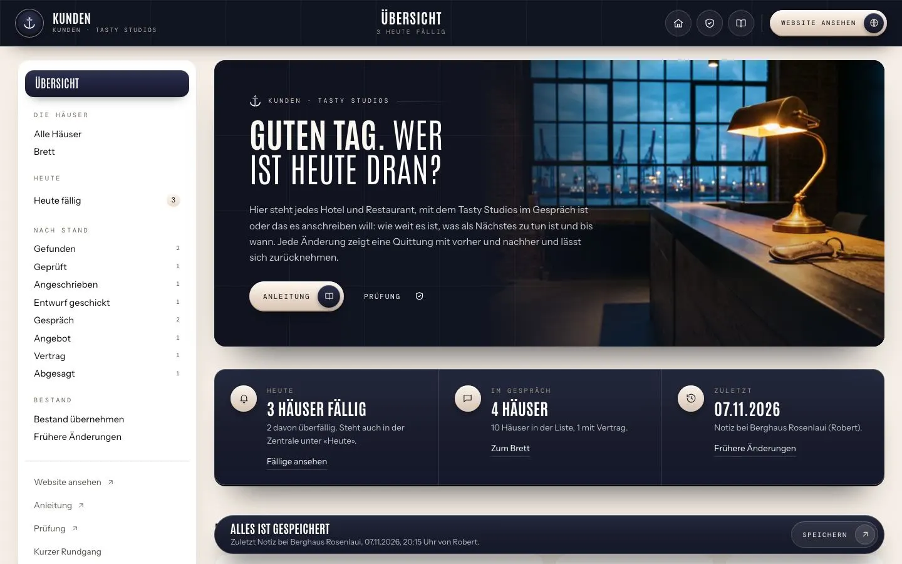
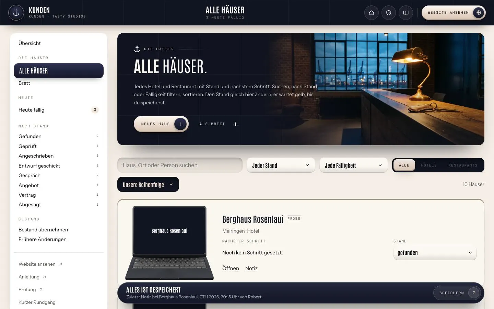
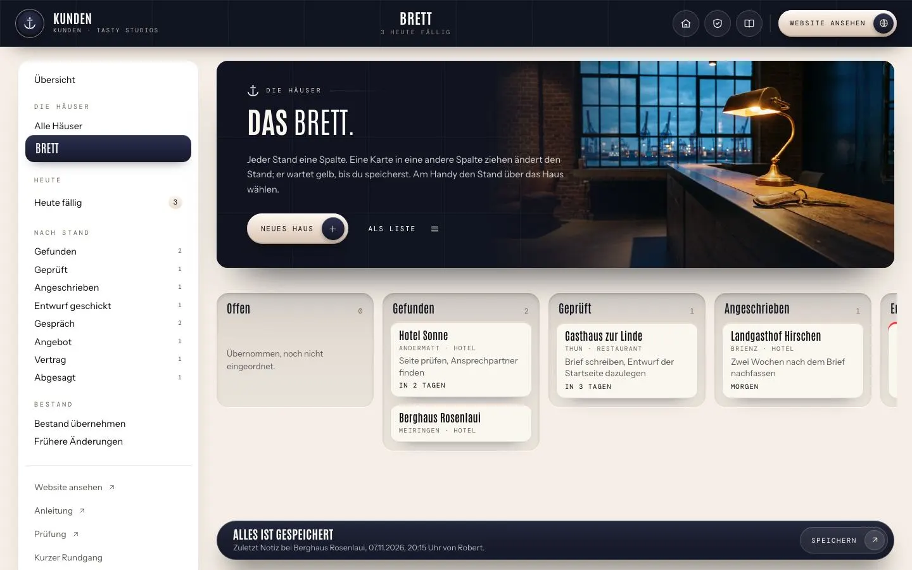
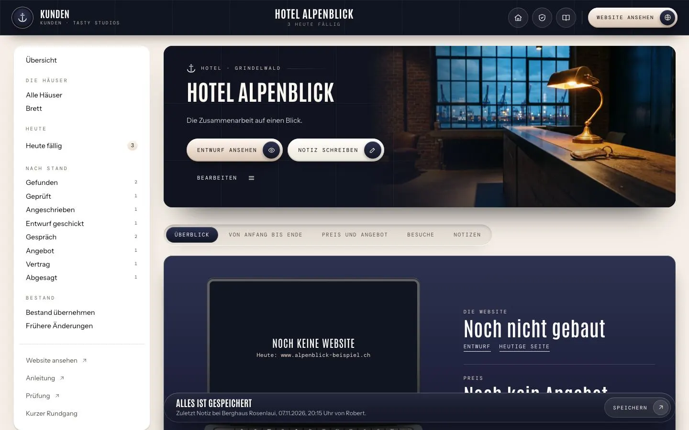
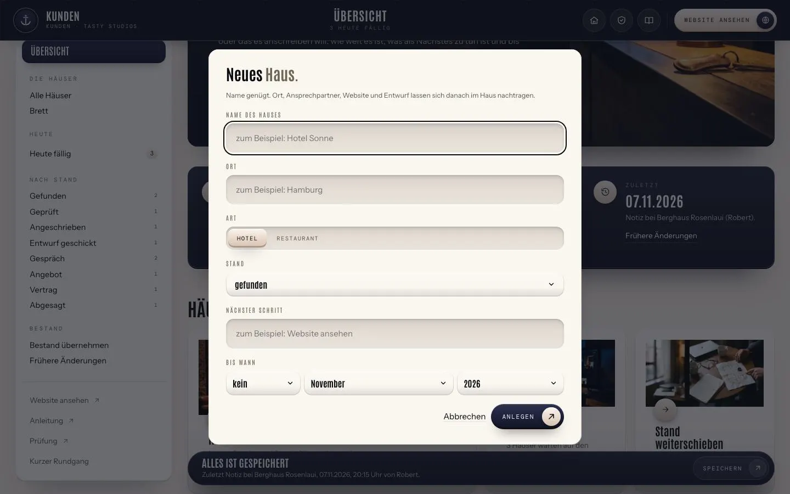
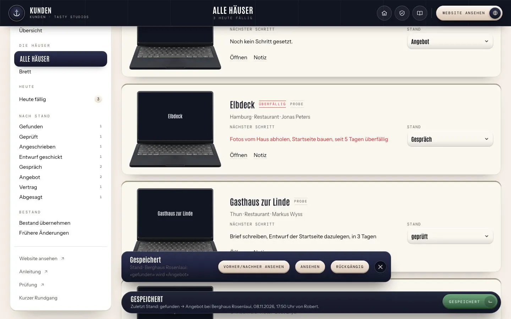
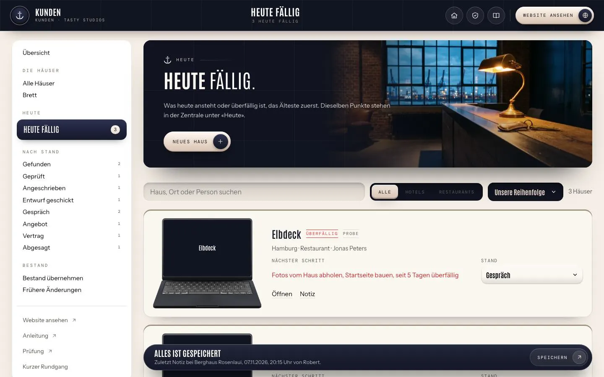

Kundenliste
So führst du die Kundenliste.
In der «Kundenliste» steht jedes Hotel und Restaurant, mit dem Tasty Studios im Gespräch ist oder das es anschreiben will: wie weit es ist, wer der Ansprechpartner ist, was als Nächstes zu tun ist und bis wann. Nichts speichert still: jede Änderung wartet, bis du speicherst, und die Quittung danach hat «Rückgängig».
Die Übersicht
Oben siehst du, was heute fällig ist, wie viele Häuser im Gespräch sind und was zuletzt geändert wurde. Darunter «Häufig gebraucht»: die Aufgaben, die im Alltag am meisten vorkommen. Ganz unten jeder Stand, von «gefunden» bis «Vertrag», mit den Häusern darin.
Links im Rand findest du alle Häuser, das Brett, «Heute fällig», jeden Stand einzeln und den Bestand. Am Handy öffnet «Bereiche» oben den Rand.

Alle Häuser
Jedes Haus steht als Karte: links seine Tafel mit Art, Ort, dem Tag des nächsten Schritts und dem Stand, rechts der nächste Schritt. Überfällig steht rot, heute fällig dunkel.
Oben suchst du nach Haus, Ort oder Person, filterst nach Stand, Fälligkeit und Art und sortierst nach Fälligkeit, Name, Ort, Stand oder zuletzt geändert. Den Stand änderst du gleich in der Karte.

Das Brett
Jeder Stand ist eine Spalte. Zieh eine Karte in die nächste Spalte, und der Stand ist geändert. Er wartet gelb, bis du speicherst. Ein Klick auf die Karte öffnet das Haus.
Am Handy ist das Brett zum Ansehen da: den Stand änderst du dort im Haus.

Ein Haus
Links Stand, nächster Schritt und das Datum, bis wann, dann Name, Ort, Art, Website, Link zum Entwurf und Kürzel, darunter der Ansprechpartner mit Mail und Telefon. Rechts die Notizen und der Verlauf, jeder Eintrag mit Name und Zeit.
«Besuche auf dem Entwurf» füllt später das Werkzeug «Wer hat den Entwurf geöffnet» über das Kürzel.

Neues Haus und Notiz
«Neues Haus» öffnet ein Fenster: Name genügt, Ort, Art, Stand und nächster Schritt gehen gleich mit. «Notiz schreiben» hält fest, was besprochen wurde, mit deinem Namen und der Zeit.

Speichern, Quittung, Rückgängig
Solange etwas nicht gespeichert ist, steht unten «Eingaben noch nicht gespeichert» und «Speichern» leuchtet gelb. «Vorher, nachher» zeigt jede Eingabe mit altem und neuem Wert. Nach dem Speichern wird der Knopf grün und eine Quittung zeigt vorher und nachher, mit «Rückgängig». Tastenkürzel: Cmd + S am Mac, Strg + S unter Windows.
Löschen fragt vorher nach. Meist genügt der Stand «abgesagt»: dann bleibt alles stehen.

Heute und die Zentrale
Was heute fällig oder überfällig ist, steht unter «Heute fällig», das Älteste zuerst.; ein Klick dort öffnet das Haus direkt.
Unter «Bestand übernehmen» kommen die echten Häuser einmal aus den Unterlagen herein, mit Bericht. «Probedaten laden» setzt zehn erfundene Häuser zum Ausprobieren ein. Beides lässt sich zurücknehmen.

Wenn etwas nicht klappt
Jede Meldung trägt den Knopf «Was tun?». Er führt zur Prüfung: Sie läuft auch dann, wenn das Werkzeug selbst nicht startet, sagt, was los ist, und was zu tun ist. Gespeichertes geht dabei nie verloren.